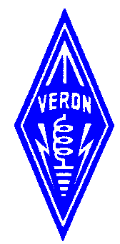
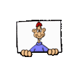

Via deze index is allerlei leuke en nuttige informatie over o.a. de

te vinden:De Buckmaster Hamcall Callsign Server
Geef de call in waarover info is gewenst:
N3KL Solar Activity Monitor:| Solar X-rays: Geomagnetic Field: |
|


Rest mij nog je veel surf-plezier toe te wensen...
Laatste update van deze site: 20-12-2019